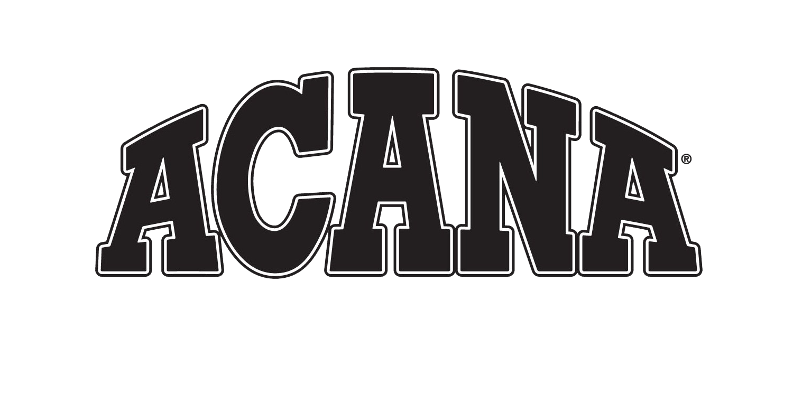
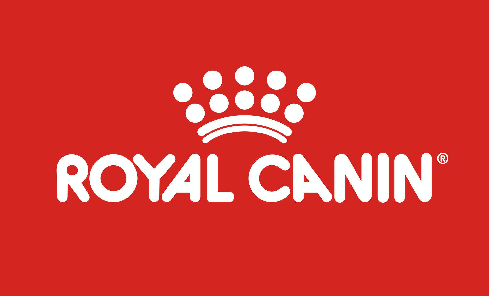
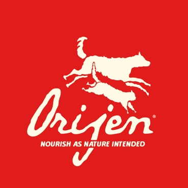
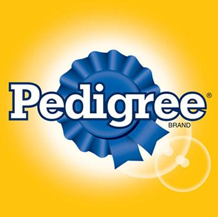

|  |
Acana |
Pouzdana robna marka za kućne ljubimce više od 25 godina, Acana hrana za pse stvara ukusne recepte koristeći svježe,
lokalne sastojke iz održivih izvora. Širok izbor obroka osmišljen je tako da bude biološki prikladan,
odražavajući evolucijsku prehranu pasa bez upotrebe bilo čega sintetičkog. |
|  |
Royal Canin |
Royal Canin Hrana za mačke i pse poznata je veterinarima i uzgajivačima više od 40 godina kao hrana visoke kvalitete.
Pioniri u proizvodnji hrane za pse i mačke, Royal Canin stoji danas zahvaljujući intenzivnom istraživanju stoji na vrhu razvoja hrane.
S najnovijim metodama proizvodnje, Royal Canin svakodnevno stvara najkvalitetniju hranu za veše kućne ljubimce. |
|  |
Orijen |
Marka koja je biološki primjerena i dizajnirana da odražava ono što bi životinje prirodno jele u divljini.
Svaki recept je bez žitarica, bogat proteinima i prekrasnog ukusa s
dodatkom voća i povrća kako bi vaš pas bio zdrav i ostao u kondiciji. |
|  |
Pedigree |
Možda najpoznatije ime u Ujedinjenom Kraljevstvu kada je u pitanju hrana za pse,
Pedigree je naporno radio kako bi stekao reputaciju jednog od najboljih brendova hrane za pse.
Nudeći mokre i suhe varijante svojih ukusnih obroka, hrana za pse Pedigree pokriva gotovo svaki moguću opciju,
kao što je ponuda najbolje hrane za štence; zbog čega su njihovi obroci tako privlačni vlasnicima pasa i njihovim ljubimcima. |